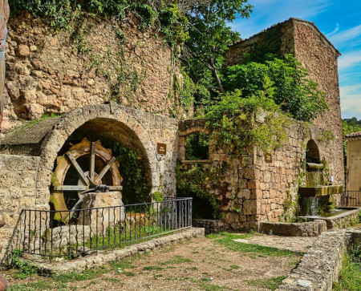
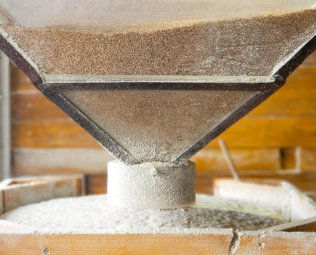
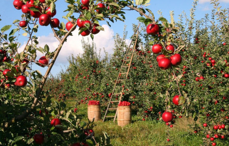
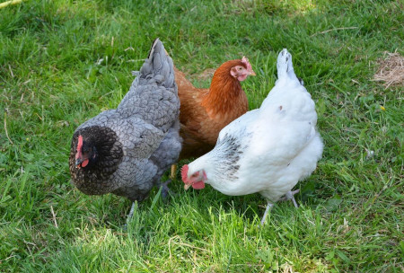

A L’ÉpiNature, nous avons développé des relations fortes avec des partenaires que nous vous présentons ici :
Moulin de Magdelaine
C’est l’exploitation de Jean Marc Maysan, agriculteur meunier basé à La Magdelaine-sur-Tarn(4km du Fournir). Il cultive du blé sur environ 34 hectares en utilisant que ses propres semences puis le transforme en utilisant des moulins à meules de pierre. Ce blé de terroir est écrasé entre deux meules puis est filtré par des tamis afin d’obtenir de la T80, T110… Le germe de blé va imprégner de sa substance l’amidon et les fibres du blé et chargera la farine de minéraux et de gras. La farine sera dite « farine de meule ». A l’ÉpiNature, nous nous en servons pour fabriquer la « Boule Complète ». Pain bien bombé, onctueux et avec une légère acidité qui gagne encore en arôme après un jour ou deux.


La Dourdoule
Bertrand et Gilles Terrier cultivent des blés dans les collines depuis de nombreuses années. Ils sont basés à Salvagnac et sont producteurs de blés bio depuis quelques années maintenant : en juillet 2021 a eu lieu leur première récolte de blés bio. Pour faire de la farine, ils utilisent un moulin à cylindres qui coupe la farine en petits morceaux. C’est très rare d’avoir ce type d’équipement chez des petits agriculteurs. Pour nous, boulangers et consommateurs, c’est une vraie pépite, car ce type de moulin génère notamment des farines légères de type T45, T65. A l’ÉpiNature, nous les utilisons pour faire les brioches, les cookies, et la T80 pour les chocolatines et le pain brioché.
La Joyeuse Pomme
C’est notre fournisseur préféré de pommes. Ils sont basés à Puycelsi, ville célèbre pour celles-ci dans le nord-Ouest du Tarn.Cela fait maintenant 4 générations que la famille Peyrous entretiennent leurs magnifiques vergers. A l’ÉpiNature, nous utilisons leurs Pommes pour faire nos Tartes au pommes et certains de nos cakes.


Œufs du Midi
Fleur Augrain élève des poules pondeuses bio à Buzet-sur-Tarn à l’orée de la forets du même nom. Elle a repris une exploitation agricole après un changement de métier. Chaque semaine, elle nous fournit les œufs bio pour la brioche, les cookies et d’autres friandises.
Les noix de la Montagne Noire
C’est une histoire de famille basée à Labrespy, à 4km au sud de Mazamet en plein dans la Montagne Noire au sud du Tarn. Les noix sont excellentes et elles sont triées manuellement à l’exploitation et ensuite à la boulangerie pour éviter les coques dans les produits. Nous les utilisons pour le fameux pain aux noix, le pain fantaisie sportive et les cookies.